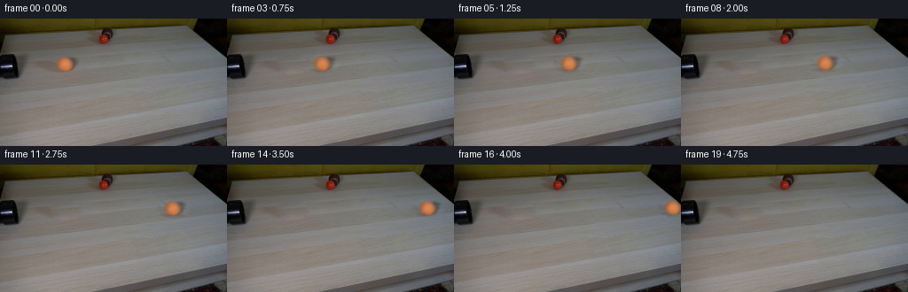
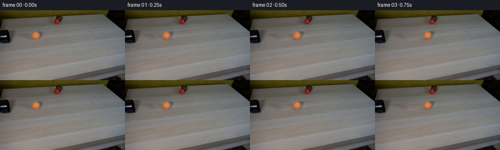

CODING AGENTS AS PIXEL WORLD MODELS
traex/GPT-6-Astra · 0010
点击播放 · 原生 RGB 像素
逐轮保存的候选
回放视频、检查图与代码变化。
每份候选均可单独播放。实际图片检查记录在下方工具轨迹中。
候选 01播放与检查图
点击播放 · 原生 RGB 像素


展开代码变化
--- 上一保存版本
+++ 本次保存版本
@@ -0,0 +1,118 @@
+"""Generate the fixed-camera rolling-ball sequence from the provided RGB plate."""
+from pathlib import Path
+import numpy as np
+from PIL import Image
+from scipy import sparse
+from scipy.sparse.linalg import spsolve
+from scipy.ndimage import gaussian_filter
+import cv2
+import artifact_io
+
+ROOT = Path(__file__).resolve().parent
+
+def clean_plate(image):
+ """Reconstruct the small occluded wood patch, matching its boundary and grain."""
+ yy, xx = np.mgrid[:144, :256]
+ mask = ((xx - 73.5) / 19.0)**2 + ((yy - 51.4) / 12.0)**2 < 1
+ indices = np.full(mask.shape, -1, dtype=int)
+ indices[mask] = np.arange(mask.sum())
+ rows, cols = np.where(mask)
+ # Same tabletop, offset to the right and slightly farther from the camera.
+ sample = image[np.clip(yy - 7, 0, 143), np.clip(xx + 35, 0, 255)]
+ matrix = sparse.lil_matrix((len(rows), len(rows)))
+ rhs = np.zeros((len(rows), 3))
+ for i, (y, x) in enumerate(zip(rows, cols)):
+ matrix[i, i] = 4
+ for dy, dx in ((-1, 0), (1, 0), (0, -1), (0, 1)):
+ ny, nx = y + dy, x + dx
+ rhs[i] += sample[y, x] - sample[ny, nx]
+ if mask[ny, nx]:
+ matrix[i, indices[ny, nx]] = -1
+ else:
+ rhs[i] += image[ny, nx]
+ result = image.copy()
+ result[mask] = spsolve(matrix.tocsc(), rhs)
+ return result, mask
+
+
+def main():
+ first = np.asarray(Image.open(ROOT / 'first_frame.png').convert('RGB'))
+ image = first.astype(np.float64)
+ plate, region = clean_plate(image)
+ temp = ROOT / '.tmp'
+ temp.mkdir(exist_ok=True)
+ Image.fromarray(np.clip(plate, 0, 255).astype(np.uint8)).save(temp / 'clean_plate.png')
+
+ y, x = np.mgrid[:144, :256].astype(np.float32)
+ cx, cy = 73.1, 51.3
+ rx, ry = 9.1, 7.7
+ radius = ((x - cx)/rx)**2 + ((y - cy)/ry)**2
+ # A supersampled matte includes the source photograph's lens softness.
+ sy, sx = np.mgrid[:144*4, :256*4].astype(np.float32)
+ sx = (sx + .5)/4 - .5
+ sy = (sy + .5)/4 - .5
+ coverage = ((((sx-cx)/rx)**2 + ((sy-cy)/ry)**2) <= 1).astype(np.float32)
+ coverage = cv2.resize(coverage, (256,144), interpolation=cv2.INTER_AREA)
+ coverage = gaussian_filter(coverage, .82).astype(np.float32)
+ coverage *= region
+
+ # Premultiplied photographic foreground. The exterior negative component is
+ # the actual softly cast shadow, rather than a newly drawn oval.
+ delta = image - plate
+ premult = (delta + coverage[...,None]*plate).astype(np.float32)
+ # Small-scale surface detail rotates independently of the fixed illumination.
+ smooth = gaussian_filter(image, (1.1,1.1,0))
+ detail = (image-smooth).astype(np.float32)
+ inside = np.clip((.96-radius)/.33, 0, 1).astype(np.float32)
+ inside = inside*inside*(3-2*inside)
+ detail *= inside[...,None]
+
+ # Camera-space rolling axis: perpendicular to travel, lying in the table.
+ axis = np.array([0, .60, .80], dtype=np.float32)
+ nx = (x-cx)/rx
+ ny = (y-cy)/ry
+ nz = np.sqrt(np.maximum(0,1-nx*nx-ny*ny))
+ normals = np.stack([nx, ny, nz],axis=-1)
+ axisdot = (normals*axis).sum(-1,keepdims=True)
+ axiscross = np.cross(axis, normals)
+ output = [first.copy()]
+ positions = []
+ for index in range(1,20):
+ t = index/4
+ distance = 46.0*t - .65*t*t
+ # Small rolling resistance. A straight trajectory on the tabletop.
+ center_x = cx + distance
+ center_y = cy - .016*distance
+ scale = 1 - .00010*distance
+ angle = -distance/9.1
+ body = (normals*np.cos(angle) + axiscross*np.sin(angle)
+ + axis*axisdot*(1-np.cos(angle)))
+ tx = (cx + rx*body[...,0]).astype(np.float32)
+ ty = (cy + ry*body[...,1]).astype(np.float32)
+ rotated_detail = cv2.remap(detail, tx, ty, cv2.INTER_LINEAR,
+ borderMode=cv2.BORDER_REFLECT_101)
+ moving = premult + .72*(rotated_detail-detail)*inside[...,None]
+ # Exposure integration is deliberately short: real-time rolling, no trails.
+ accumulated = np.zeros_like(image)
+ speed = 46.0 - 1.3*t
+ for shutter in (-1/150, 0, 1/150):
+ shift = speed*shutter
+ mapx = (cx + (x-center_x-shift)/scale).astype(np.float32)
+ mapy = (cy + (y-center_y+.016*shift)/scale).astype(np.float32)
+ matte = cv2.remap(coverage, mapx, mapy, cv2.INTER_LINEAR,
+ borderMode=cv2.BORDER_CONSTANT)
+ foreground = cv2.remap(moving, mapx, mapy, cv2.INTER_LINEAR,
+ borderMode=cv2.BORDER_CONSTANT)
+ accumulated += plate*(1-matte[...,None]) + foreground
+ frame = np.clip(np.rint(accumulated/3),0,255).astype(np.uint8)
+ output.append(frame)
+ positions.append((index, round(center_x,3),round(center_y,3)))
+ frames = np.stack(output)
+ assert frames.shape == (20,144,256,3)
+ assert np.array_equal(frames[0],first)
+ np.save(temp/'candidate_rgb.npy', frames)
+ (temp/'centers.txt').write_text('\n'.join(map(str,positions)))
+ artifact_io.save(frames, ROOT)
+
+if __name__ == '__main__':
+ main()
可观测工具轨迹
实际执行的命令与返回图片。
命令 1exit 0
/bin/bash -lc "ls -la && cat prompt.txt && printf '\\n---RULES---\\n' && cat GENERATION_RULES.md"
命令 2exit 0
/bin/bash -lc "cat artifact_io.py && python - <<'PY'
from PIL import Image
import numpy as np
im=np.array(Image.open('first_frame.png')); print(im.shape)
# block chroma/luma ASCII
im=im[:,:,:3]
for y in range(0,144,3):
s=''
for x in range(0,256,3):
r,g,b=im[y:y+3,x:x+3].mean((0,1)); l=(r+g+b)/3
c=' '
if l<25:c='@'
elif l<50:c='#'
elif l<80:c='O'
elif r>g*1.4 and r>b*1.5:c='R'
elif r>g*1.18 and g>b*1.15:c='o'
elif l<115:c='x'
elif l<155:c='+'
elif l<190:c='-'
elif l<220:c='.'
else:c=' '
s+=c
print(f'{y:3} {s}')
PY"命令 3exit 0
/bin/bash -lc "python - <<'PY'
import numpy as np
from PIL import Image
A=np.array(Image.open('first_frame.png'))
for y in range(0,144,8):
print(y,[(x,tuple(A[y:y+4,x:x+4].mean((0,1)).round().astype(int))) for x in range(0,256,12)])
print('\\nDetailed left top / black to white and colors: ')
chars='@%#*+=-:. '
for y in range(0,85):
s=''
for x in range(0,145):
r,g,b=map(float,A[y,x,:3]); l=.2126*r+.7152*g+.0722*b
if r>1.35*g and r-b>18: c='R' if g<50 else 'o'
else: c=chars[min(9,int(l*10/190))]
s+=c
print(f'{y:02d} {s}')
PY"命令 4exit 0
/bin/bash -lc "python - <<'PY'
import numpy as np
from PIL import Image
im=np.array(Image.open('first_frame.png')).astype(int)
# ball RGB row scan
for y in range(40,64):
print(y,' '.join(f'{r:02x}{g:02x}{b:02x}' for r,g,b in im[y,58:94]))
print('red ball region:')
for y in range(8,30):
print(y,' '.join(f'{r:02x}{g:02x}{b:02x}' for r,g,b in im[y,105:130]))
PY"命令 5exit 0
/bin/bash -lc "python - <<'PY'
import importlib.util
for m in ['cv2','scipy','numpy','PIL']:print(m,bool(importlib.util.find_spec(m)))
import numpy as np
from PIL import Image
im=np.asarray(Image.open('first_frame.png'))
# enlarged character sketch pipe at x0:36 y34:74
for y in range(34,74):
s=''
for x in range(0,38):
val=im[y,x].mean()
s+='@%#*+=-:. '[min(9,int(val/15))]*2
print(f'{y:2}',s)
PY"命令 6exit 0
/bin/bash -lc "python - <<'PY'
import numpy as np
from PIL import Image
from scipy.ndimage import gaussian_filter
from scipy import sparse
from scipy.sparse.linalg import spsolve
im=np.array(Image.open('first_frame.png')).astype(float)
y,x=np.mgrid[:144,:256]
m=((x-73.5)/18)**2+((y-51.2)/11.5)**2<1
idx=np.full(m.shape,-1); idx[m]=np.arange(m.sum())
rr,cc=np.where(m); N=len(rr)
mat=sparse.lil_matrix((N,N)); rhs=np.zeros((N,3))
# sample same grain farther right
src=im[np.clip(y-7,0,143),np.clip(x+35,0,255)]
for i,(r,c) in enumerate(zip(rr,cc)):
mat[i,i]=4
for dr,dc in [(-1,0),(1,0),(0,-1),(0,1)]:
r2,c2=r+dr,c+dc
rhs[i]+=src[r,c]-src[r2,c2]
if m[r2,c2]:mat[i,idx[r2,c2]]=-1
else:rhs[i]+=im[r2,c2]
bg=im.copy();bg[m]=spsolve(mat.tocsc(),rhs)
Image.fromarray(np.clip(bg,0,255).astype('uint8')).save('.tmp/background.png')
for r in [42,45,48,51,54,57,60]:
print('row',r, 'orig:',im[r,60:94:3,0].astype(int),'BG:',bg[r,60:94:3,0].astype(int))
np.save('.tmp/bg.npy',bg)
PY"命令 7exit 0
/bin/bash -lc "cat > generate.py <<'PY'
\"\"\"Generate the fixed-camera rolling-ball sequence from the provided RGB plate.\"\"\"
from pathlib import Path
import numpy as np
from PIL import Image
from scipy import sparse
from scipy.sparse.linalg import spsolve
from scipy.ndimage import gaussian_filter
import cv2
import artifact_io
ROOT = Path(__file__).resolve().parent
def clean_plate(image):
\"\"\"Reconstruct the small occluded wood patch, matching its boundary and grain.\"\"\"
yy, xx = np.mgrid[:144, :256]
mask = ((xx - 73.5) / 19.0)**2 + ((yy - 51.4) / 12.0)**2 < 1
indices = np.full(mask.shape, -1, dtype=int)
indices[mask] = np.arange(mask.sum())
rows, cols = np.where(mask)
# Same tabletop, offset to the right and slightly farther from the camera.
sample = image[np.clip(yy - 7, 0, 143), np.clip(xx + 35, 0, 255)]
matrix = sparse.lil_matrix((len(rows), len(rows)))
rhs = np.zeros((len(rows), 3))
for i, (y, x) in enumerate(zip(rows, cols)):
matrix[i, i] = 4
for dy, dx in ((-1, 0), (1, 0), (0, -1), (0, 1)):
ny, nx = y + dy, x + dx
rhs[i] += sample[y, x] - sample[ny, nx]
if mask[ny, nx]:
matrix[i, indices[ny, nx]] = -1
else:
rhs[i] += image[ny, nx]
result = image.copy()
result[mask] = spsolve(matrix.tocsc(), rhs)
return result, mask
def main():
first = np.asarray(Image.open(ROOT / 'first_frame.png').convert('RGB'))
image = first.astype(np.float64)
plate, region = clean_plate(image)
temp = ROOT / '.tmp'
temp.mkdir(exist_ok=True)
Image.fromarray(np.clip(plate, 0, 255).astype(np.uint8)).save(temp / 'clean_plate.png')
y, x = np.mgrid[:144, :256].astype(np.float32)
cx, cy = 73.1, 51.3
rx, ry = 9.1, 7.7
radius = ((x - cx)/rx)**2 + ((y - cy)/ry)**2
# A supersampled matte includes the source photograph's lens softness.
sy, sx = np.mgrid[:144*4, :256*4].astype(np.float32)
sx = (sx + .5)/4 - .5
sy = (sy + .5)/4 - .5
coverage = ((((sx-cx)/rx)**2 + ((sy-cy)/ry)**2) <= 1).astype(np.float32)
coverage = cv2.resize(coverage, (256,144), interpolation=cv2.INTER_AREA)
coverage = gaussian_filter(coverage, .82).astype(np.float32)
coverage *= region
# Premultiplied photographic foreground. The exterior negative component is
# the actual softly cast shadow, rather than a newly drawn oval.
delta = image - plate
premult = (delta + coverage[...,None]*plate).astype(np.float32)
# Small-scale surface detail rotates independently of the fixed illumination.
smooth = gaussian_filter(image, (1.1,1.1,0))
detail = (image-smooth).astype(np.float32)
inside = np.clip((.96-radius)/.33, 0, 1).astype(np.float32)
inside = inside*inside*(3-2*inside)
detail *= inside[...,None]
# Camera-space rolling axis: perpendicular to travel, lying in the table.
axis = np.array([0, .60, .80], dtype=np.float32)
nx = (x-cx)/rx
ny = (y-cy)/ry
nz = np.sqrt(np.maximum(0,1-nx*nx-ny*ny))
normals = np.stack([nx, ny, nz],axis=-1)
axisdot = (normals*axis).sum(-1,keepdims=True)
axiscross = np.cross(axis, normals)
output = [first.copy()]
positions = []
for index in range(1,20):
t = index/4
distance = 46.0*t - .65*t*t
# Small rolling resistance. A straight trajectory on the tabletop.
center_x = cx + distance
center_y = cy - .016*distance
scale = 1 - .00010*distance
angle = -distance/9.1
body = (normals*np.cos(angle) + axiscross*np.sin(angle)
+ axis*axisdot*(1-np.cos(angle)))
tx = (cx + rx*body[...,0]).astype(np.float32)
ty = (cy + ry*body[...,1]).astype(np.float32)
rotated_detail = cv2.remap(detail, tx, ty, cv2.INTER_LINEAR,
borderMode=cv2.BORDER_REFLECT_101)
moving = premult + .72*(rotated_detail-detail)*inside[...,None]
# Exposure integration is deliberately short: real-time rolling, no trails.
accumulated = np.zeros_like(image)
speed = 46.0 - 1.3*t
for shutter in (-1/150, 0, 1/150):
shift = speed*shutter
mapx = (cx + (x-center_x-shift)/scale).astype(np.float32)
mapy = (cy + (y-center_y+.016*shift)/scale).astype(np.float32)
matte = cv2.remap(coverage, mapx, mapy, cv2.INTER_LINEAR,
borderMode=cv2.BORDER_CONSTANT)
foreground = cv2.remap(moving, mapx, mapy, cv2.INTER_LINEAR,
borderMode=cv2.BORDER_CONSTANT)
accumulated += plate*(1-matte[...,None]) + foreground
frame = np.clip(np.rint(accumulated/3),0,255).astype(np.uint8)
output.append(frame)
positions.append((index, round(center_x,3),round(center_y,3)))
frames = np.stack(output)
assert frames.shape == (20,144,256,3)
assert np.array_equal(frames[0],first)
np.save(temp/'candidate_rgb.npy', frames)
(temp/'centers.txt').write_text('\\n'.join(map(str,positions)))
artifact_io.save(frames, ROOT)
if __name__ == '__main__':
main()
PY
python generate.py
python - <<'PY'
from PIL import Image
import numpy as np
from pathlib import Path
f=np.load('.tmp/candidate_rgb.npy')
print('shape',f.shape,'dtype',f.dtype,'frame0 exact',np.array_equal(f[0],np.array(Image.open('first_frame.png'))))
for i in [0,1,4,8,12,16,19]:
a=f[i].astype(float)
m=(a[:,:,0]-a[:,:,1]>35)&(a[:,:,1]>50)
yy,xx=np.where(m)
print(i,'orange pixels',len(xx),'bounds',(xx.min(), yy.min(), xx.max(), yy.max()) if len(xx) else None,'changed',np.count_nonzero(np.any(f[i]"'!=f[0],axis=-1)))
print('"'outputs:',[(p.name,p.stat().st_size) for p in Path('.').glob('*') if p.is_file()])
PY"命令 8exit 0
/bin/bash -lc "python - <<'PY'
import numpy as np
from PIL import Image
f=np.load('.tmp/candidate_rgb.npy')
# Compact numeric inspection of translated ball / shadow support.
chars=' .:-=+*#%@'
for i,cx in [(0,73),(1,85),(8,163),(16,247)]:
print('FRAME',i)
a=f[i].astype(float)
for y in range(40,65):
print(''.join(chars[int(np.clip((a[y,x,0]-a[y,x,1])/10,0,9))] for x in range(max(0,cx-18),min(256,cx+20))))
print('Pixel range:',f.min(),f.max())
PY"保存候选 1 份；完成命令 8 次；可验证图片返回 0 张。原始 API 响应与完整日志保留在本地。